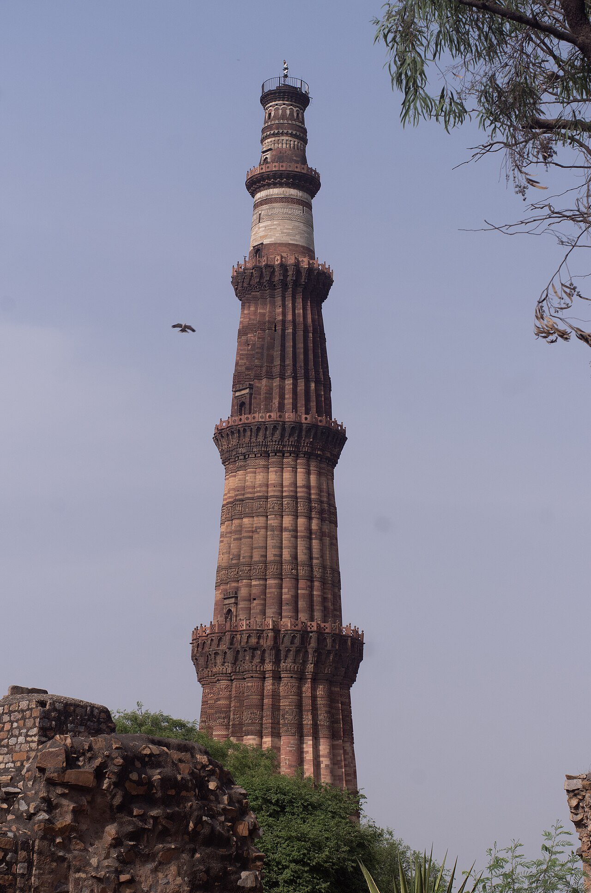
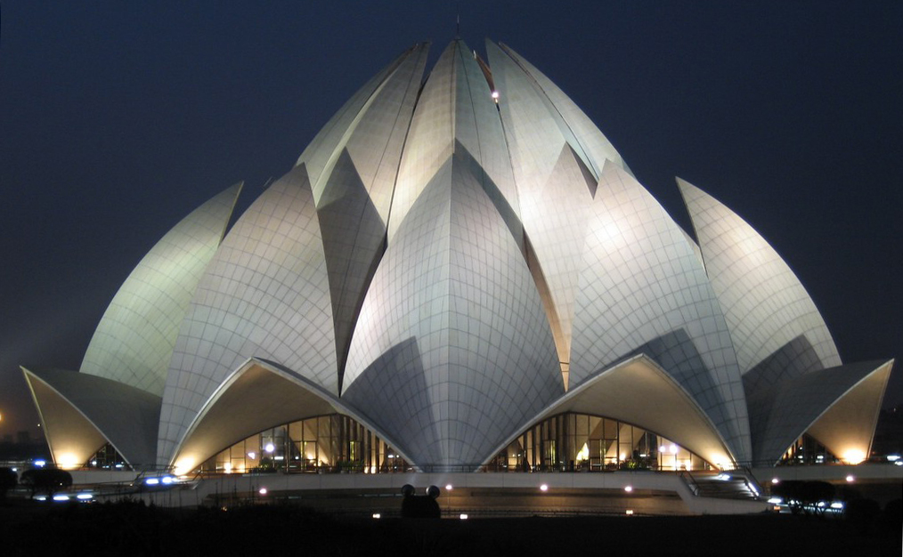

Destination photographs are reproduced under the licenses linked below. Owner-supplied vehicle and traveller photographs are provided by Vinod Tour and Travels.
Manali, Himachal Pradesh

Photo: Neerajsinghazm · Original photograph · CC BY-SA 4.0. Displayed at responsive sizes; previews may be cropped.
{kind=link}
Shimla

Photo: Navneet Sharma · Original photograph · CC BY-SA 4.0. Displayed at responsive sizes; previews may be cropped.
{kind=link}
Chandigarh

Photo: Raakesh Blokhra · Original photograph · CC BY-SA 2.0. Displayed at responsive sizes; previews may be cropped.
{kind=link}
Golden Temple

Photo: Shagil Kannur · Original photograph · CC BY-SA 4.0. Displayed at responsive sizes; previews may be cropped.
{kind=link}
Kedarnath Temple

Photo: Shivam Kumar 766 · Original photograph · CC BY-SA 4.0. Displayed at responsive sizes; previews may be cropped.
{kind=link}
Har Ki Pauri

Photo: Sanatansociety Picture provided by Peter and Chris Marchand, provides free information for promotional purpose · Original photograph · CC BY-SA 2.5. Displayed at responsive sizes; previews may be cropped.
{kind=link}
Rishikesh

Photo: VK1983 · Original photograph · CC BY-SA 4.0. Displayed at responsive sizes; previews may be cropped.
{kind=link}
Mussoorie

Photo: Paul Hamilton · Original photograph · CC BY-SA 2.0. Displayed at responsive sizes; previews may be cropped.
.jpg){kind=link}
Nainital

Photo: Skalvanov · Original photograph · CC BY-SA 4.0. Displayed at responsive sizes; previews may be cropped.
{kind=link}
Jim Corbett National Park

Photo: Soumyajit Nandy · Original photograph · CC BY-SA 3.0. Displayed at responsive sizes; previews may be cropped.
{kind=link}
Lansdowne, India

Photo: Ravi krishnan gupta · Original photograph · CC BY-SA 4.0. Displayed at responsive sizes; previews may be cropped.
{kind=link}
India Gate

Photo: Incredible India Portal · Original photograph · CC0. Displayed at responsive sizes; previews may be cropped.
{kind=link}
Hawa Mahal

Photo: Chainwit. · Original photograph · CC BY-SA 4.0. Displayed at responsive sizes; previews may be cropped.
_-_img_01.jpg){kind=link}
Agra Fort

Photo: A.Savin · Original photograph · FAL. Displayed at responsive sizes; previews may be cropped.
{kind=link}
Qutb Minar

Photo: Wasir kasab · Original photograph · CC BY 4.0. Displayed at responsive sizes; previews may be cropped.
{kind=link}
Lotus Temple

Photo: Vandelizer · Original photograph · CC BY 2.0. Displayed at responsive sizes; previews may be cropped.
{kind=link}
Taj Mahal

Photo: Yann ; edited by Jim Carter · Original photograph · CC BY-SA 4.0. Displayed at responsive sizes; previews may be cropped.
.jpeg){kind=link}